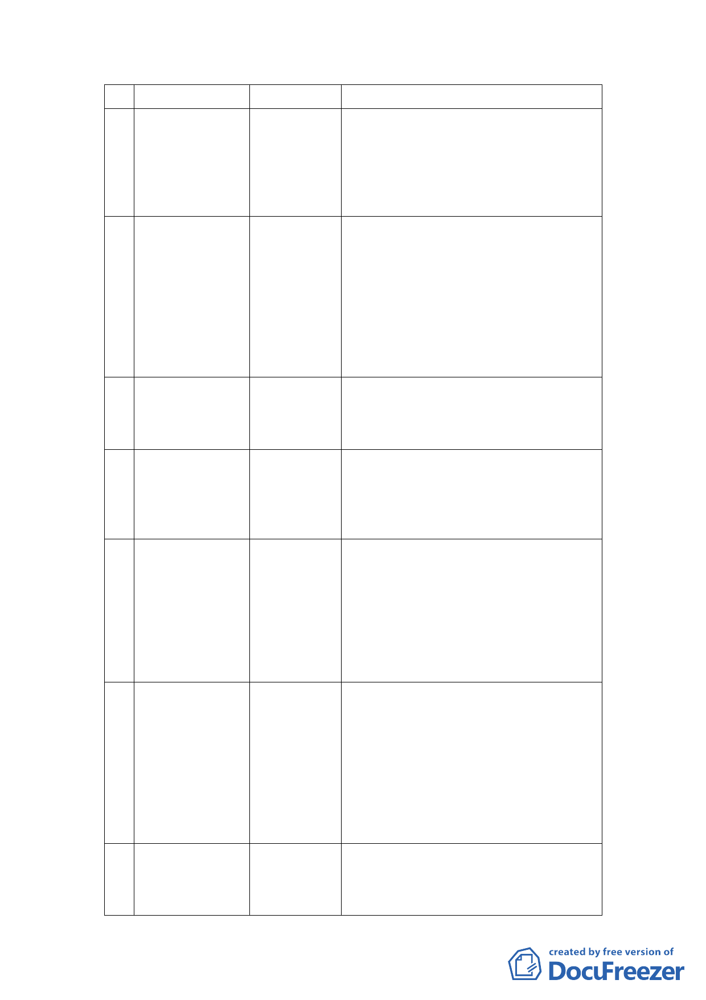

表 1 專案小組統計表
案 名召 集 人小 組 成 員
1 臺北市中華電信 邱委員大展 辛委員晚教、張委員桂林、黃委員世孟、
股份有限公司 32
林委員志盈、黃委員啟瑞、張委員培義、
處基地都市計畫
許委員俊美
通盤檢討（主要
計畫及細部計
畫）案
2 變更臺北市北投 張委員桂林 辛委員晚教、陳委員小紅、魏委員國彥、
區泉源段四小段
李委員永展、邱委員大展、張委員培義、
771 地號等 7 筆
許委員俊美、陳委員春銅
土地保護區及新
民段二小段
125-1 地號等 3 筆
土地住宅區為文
教區主要計畫暨
擬定細部計畫案
3 擬定臺北市文山 林委員楨家 陳委員小紅、黃委員志弘、邱委員大展、
區景美溪左岸老
吳委員盛忠、許委員俊美、陳委員春銅
泉里附近地區細
部計畫案
4 臺北市士林區都 黃委員世孟 張委員桂林、辛委員晚教、姚委員仁喜、
市計畫通盤檢討
陳委員小紅、林委員楨家、李委員永展、
（主要計畫）案
黃委員台生、黃委員志弘、邱委員大展、
黃委員啟瑞、林委員志盈、吳委員盛忠、
陳委員春銅、許委員俊美
5 變更臺北市北投 黃委員志弘 張委員桂林、辛委員晚教、陳委員小紅、
區豐年段四小段
李委員永展、邱委員大展、黃委員啟瑞、
408 地號等 13 筆
林委員志盈、張委員培義、許委員俊美、
土地工業區為商
陳委員春銅
業區、公園用
地、道路用地、
綠地用地主要暨
擬定細部計畫案
6 配合臺北市捷運 黃委員台生 張委員桂林、辛委員晚教、李委員永展、
萬大-中和-樹林
黃委員志弘、林委員楨家、許委員俊美
線工程變更沿線
土地為交通用地
及土地開發區
（捷）主要計畫
及擬定暨劃定都
市更新地區細部
計畫案案
7 配合臺北市捷運 羅委員孝賢 張委員桂林、辛委員晚教、陳委員小紅、
信義線東延段工
林委員楨家、黃委員台生、李委員永展、
程變更住宅區為
王委員惠君、林委員志盈、許委員俊美
土地開發區（捷）
-3-